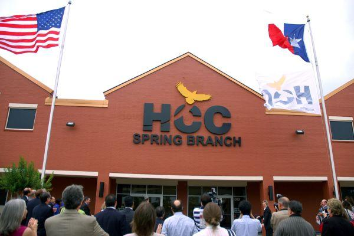

My name is Ozzy Dagci. Thank you for checking my website out! I recently graduated from Houston Community College with Associate Degree in Computer Science. Currently, I am one of Carolina Fintech's CTAC Program participants. After completing the CTAC program, I am interested in Full-Stack, Front-End, or Back-End Development positions.
I love reading. Whenever I read a book, it soothes me. I feel that reading has a healing affect on me. I am very inquisitive. I love learning. I love travel however, if I open a book and read about the history of the city that I am traveling, that doubles the joy of traveling experience. I love wine. I love reading about the history of the wine that I drink or geography of the wine, what kind of climate it comes from, and etc! I am also very into music. My favorite genre is Rock and I play guitar!